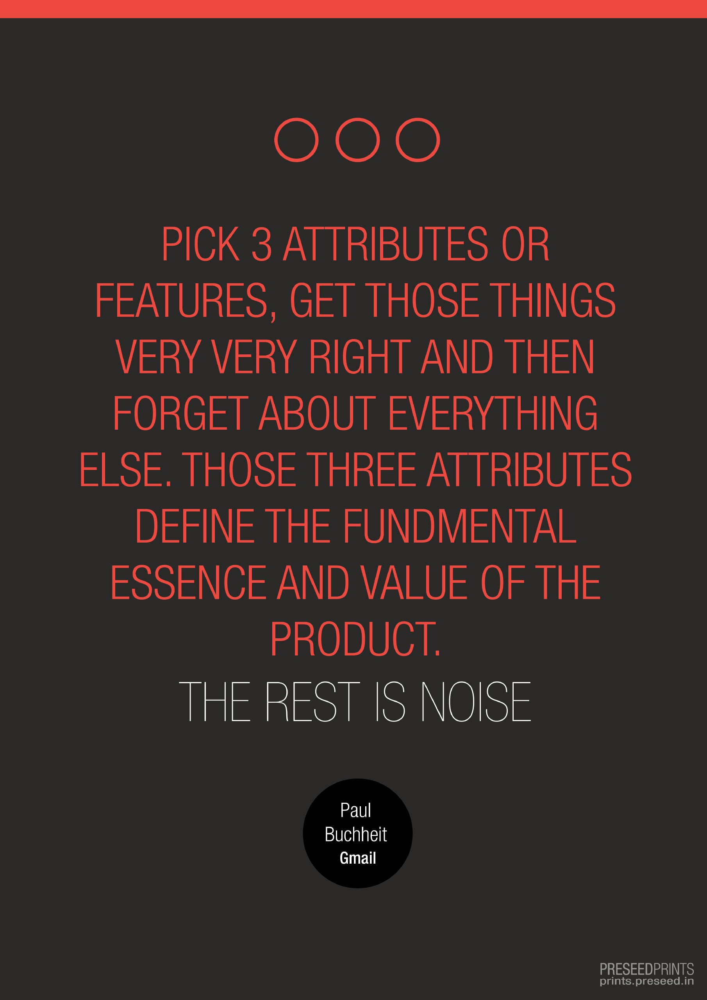

"Before Preseed, you had a mere will to do
something out of the ordinary. Now you will have a rock solid idea to do".
Over 10 years of Facebook, Twitter, and social web in general, have brought to us, a lot of talks. Great talks. These have been incredible social networks of talks. Now it’s time for action.

Let's think and build ideas together
So many people, incubators and initiatives together may not be
able to help entrepreneurs as much as one right web product. Reason - The
vision of too many people may have been boosting the entrepreneurial
ecosystem but only Anglelist had the product vision to create the most
scalable product to contribute to this cause of boosting entrepreneurs
rather than creating an incubator or conducting events.
Blast from the recent past from 2012 — First, Nishchal started this community,
Preseed, as a FB page to
empower entrepreneurs and aspiring entrepreneurs personally through mentoring
them over my lectures in top colleges and through personal phone calls. Then,
with the lessons of running that community for 2 years Nishchal started to build
a web product called Idealistr in 2014 (find it in step 3 of
preseeded.preseed.in) to empower potential entrepreneurs, across the
world, by
suitably profiling them and making them discoverable. The main problem faced by
aspiring entrepreneurs who want to turn an idea into reality is getting good
talent. Idealistr aimed to solve that problem by helping change makers find the
right cofounders/volunteers for their idea to bring it to reality. Idealistr was
also meant to lay the foundation for attracting angel investors. This was a
product for philosophers, engineers, doers, remote coworkers, entrepreneurs and
aspiring entrepreneurs.
Also, Nishchal had been dreaming since 2009 to channel the creations of
technology students across the country towards solving real-world problems. So
there is a wholesome growth in our society of students and solution seekers,
which is the society as a whole. This can be achieved in a more social and
democratic ways than that can be seen so far for there is a vision for a very
noble cause but that vision needs to be translated into a vision for a web
product and not a mere website. Thus making it more scalable. And this is true
for us too.
Mission: Connecting entrepreneur, inspired hackers, hustlers, designers, and early-adopters today to build profound teams and MVP tomorrow.

Karma means action; an action can either bind or liberate you. If action is in pursuit of happiness, it binds and if it is an expression of happiness it liberates. Only if your action is an expression of your joy it is worthwhile otherwise it is just an exploitation.
Dharma:There are certain rhythm which governs the functioning of life and existence. These rhythm can be called as laws or Dharma. Dharma exist at every sphere of life. If an action or Karma follows the appropriate rhythm or Dharma then it is correct in existential terms otherwise it is destructive.
Sewa:Being available is seva. Like the Sun, the wind, fruits etc. The most fundamental law or Dharma of existence is Seva. Seva appropriates life and gives a meaning to it.
" When Karma, Dharma and Seva fall in the same line then the whole effort is called as Karma yoga. At some point the whole economics of India was designed on this line and evidence proves that it is the most successful and holistic. We endeavour to revive it through Preseed. "
“I journeyed into Preseed to empower those with a will to do something out of the ordinary - by often encouraging them to drop out of their colleges or jobs to pursue their lofty ideas, if I felt I could raise their intensity to face what may be coming. Why? Long ago, I asked myself the question about what is the one thing I must do with my capabilities - the answer I got was - I must do everything I can, to give our world, better leaders. As I progressed I was able to marry in vision, my previous failed social networking startup of 2009 to become now, a more conscious social network vision, to produce the goal of producing better leaders”.
6 years forward, and we understand how unfathomably complex this problem is and how many facets it has from education, politics, judicial system to religion and spirituality, if it is to be attempted truly conscientiously.
"The formulation of the problem is often more essential than its solution, which may be merely
a matter of mathematical or experimental skills".
One such problem, our
founder,
Nishchal, has
given up everything else for, is, lack of actual freedom for billions of
people.
The
solution
is, his idea of the future of freedom for billions of people to pursue
their
loftiest, unchained
visions, through the power of his tech product, Chattodo-a social
network of work
deliverables,
or,
A SOCIAL NETWORK OF ACTION.
Step 0 - Todoed: Turn any selected text, into a delegated todo, with just one right click. (ACHIEVED)
Most of the internet age working world works on google chrome browser. We set out to build the finest tool for increasing productivity of a google chrome browser user. That is x million people. A 20th of that may be made more productive because of this extension. That is just a start. Our next step would be to be the simplest and most seemless todo listing app for all internet devices. We hope, if you are reading this, this changes your life. We are building todoed because we are determined to make our life more productive. www.todoed.co.

ICQ messenger, MSN, FB Messenger, WhatsApp, Telegram etc. All were fundamentally designed to enable you to chat, not work, chat. As a result we have a world which talks too much but acts very little.
Step 1 - Chattodo: To be the most productive chat app, ever designed. (ACHIEVED)
In the early days of Preseed during remote communication with his team in 2012, Nishchal noticed that actionable/tasks exchanged during FB/Whatsapp chats on mobile had a tendency to fade away and be forgotten. This problem of not having tasks be easily assigned and accountable from chats itself drove him to startup upon the idea of Chattodo. We know how hard it is to manage the work related chats in a growing startup in this noisy world of communication overload. Chattodo is built by entrepreneurs for entrepreneurs to serve this exact purpose. This step is made up of 5 years of relentless research which most people won’t dare do. Check its steps in brief here. Read more into R&D steps.
Step 2 - Design to save the world from an overdose of hyper-connected social network of talks. (ACHIEVED)
"The modern devil is cheap dopamine" - Naval.
Chattodo is designed to save you from information overload induced anxiety too. We are not going to be a cheap dopamine kind of a social networking app.
Step 3 below makes Chattodo a digital platform too, where your community does business activities with you regularly, with a single agenda of putting shape to your own business idea.
If you are a rare inspired hacker, hustler, and a
designer, all in one
who could further our mobile
App Chattodo in exchange for a substantial stock option with us,
dig our website and it's surrounding links very well once, and no more. Know that only
Step1 and Step 2 are all you need to know.

Chattodo is a product that has allowed me to be productive while living among the trees already. Leaving me assured that my words on Chattodo reached my team’s todo lists, seamlessly.
It takes a certain hippie like liberated perspective to build businesses with simplicity as the guiding principle. That perspective leads us to two core values in our products, usability and lean -
After vision this is where we spend most of our time. We keep it to what's needed and where it's needed. Nothing that is not needed will ever find its way into our products.
Design is more important than engineering in the consumer web space. One of the problems we see in this space in India is not of that of engineering. In fact India produces strong engineers. It's a problem of design, for India seriously lacks consumer web 'design' sensibilities. The reason stands - lack of geeks here marrying some seriously cool people. We hope that someday we are able to teach that to India through our products.
"Usability and the utility, not the visual design, determine the success or failure of a web-app. Since the visitor of the page is the only person who clicks the mouse and therefore decides everything, user-centric design has become a standard approach for successful and profit-oriented web design. After all, if users can’t use a feature, it might as well not exist." - Vitaly Friedman

We take it a step further. Lean is how we live, let alone build stuff. We 'build, measure, learn, repeat'and never raise funds without setting it right.
Bootstrapping has its own entrepreneurial lessons that cannot be learnt without self experiencing them. We iterate, customer validate and reiterate. If we fail, we also fail fast, we re-iterate even faster and all of that, at minimum cost implications. In short we make sure we customer validate the products before we look to move to the next steps of development. Shit gets done in least amounts of not only money but also time.
"If you are not embarrassed by the first version of your product, you’ve launched too late." - Reid Hoffman

The 4 pillars of any business endeavor that we like to advise and connect towards, are:
Brand positioning of Chatodo user’s ideas, further ideation, UI drawings on the fly, Need - Value - Gap analysis, thought experimentations with their collaborators. Even pivots for better market fit if need be through direct communication with early adopters.
For customers - Chattodo
user’s ability to deliver their own products and services
efficiently with sustenance and scale to their own customers.
For investors - Chattodo user’s communication of
their next round investment readiness more interactive then a slide
deck.
Far greater productivity - During the last 10 years we have known about nearly all the tools that can increase productivity of a startup, a productive freelancer or an employee. We are making sure we do it better than those tools, merely out of chats.
Influence thought and hence, internal as well external ecosystem of our users through intangible contributions of our steps ahead. As a result an innovative culture will be infused across our user’s startups. The startup culture of India then becomes the magnet for real innovation.


Nishchal's talk about PRESEED at Indian School of Business to 150+ people in 2014. Here, among many things, Nishchal decided to address the problem of intoxication in colleges in his inclusive maverick style.
Q) ) Are you looking only for people to work on your specific ideas, Nishchal? If not, how do you pick one over the others? We came here through a general google search for Preseed funding for our startup. We found your webpage called The Simple fund through this link simple.preseed.in on the first page of that Google search result. Is your company Preseed Ventures Pvt. Ltd also an incubator or an investor of some kind?
A) Preseed is a virtual incubator* primarily focused on incubating Nishchal’s own products first, which in turn are directly aligned with our mission of greater freedom. Preseed takes inspiration in the way Nishchal thinks business ideas. Hence, it stays focused on finding resources to empower him on his products first. The vision for the fund above is also really to find an investor who can create this fund which in turn enables us to continue finding more entrepreneurs like Nishchal who really want to do something genuinely meaningful. And meaningful is that which gives people greater freedom.
We have designed this website to look for people mostly to work on Nishchal’s own consumer web ideas. That is why Nishchal built Preseed in the first place. However, if there is ‘someone with an idea’ and or capability that catches his fancy, we would be willing to put in all we can into that idea too.
His experiences puts him in a fairly good position to make judgments about what/who to pursue and what/who to say no to.
*An incubator that supports you like any other incubator but without a fixed physical space, or monetary investment. For us to support people who are self-inspired, just an internet connection at their homes is sufficient.
TSF is a concept for now. We are however curating deals to build a fund around. So far the success we have achieved can be measured by how many startups have found TSF web page organically by searching a relevant keyword called ‘Preseed funding’. We have engaged with over 20% of such startups, meaning 20+ relevant startups ready to raise money. We are nearly ready to float a fund around our startup deal flow. If you are an investor, please get in touch with nishchal@preseed.in.